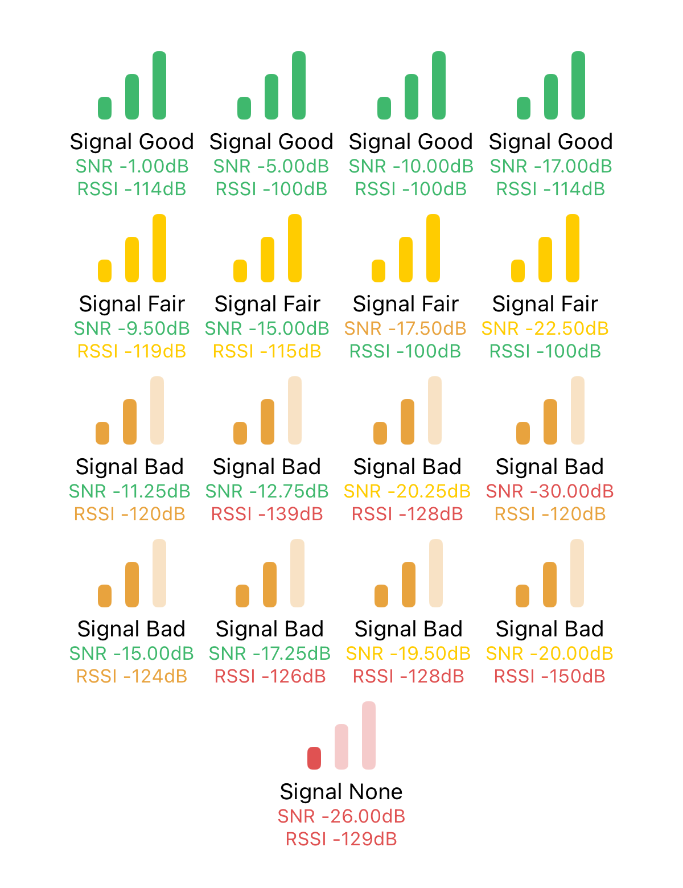
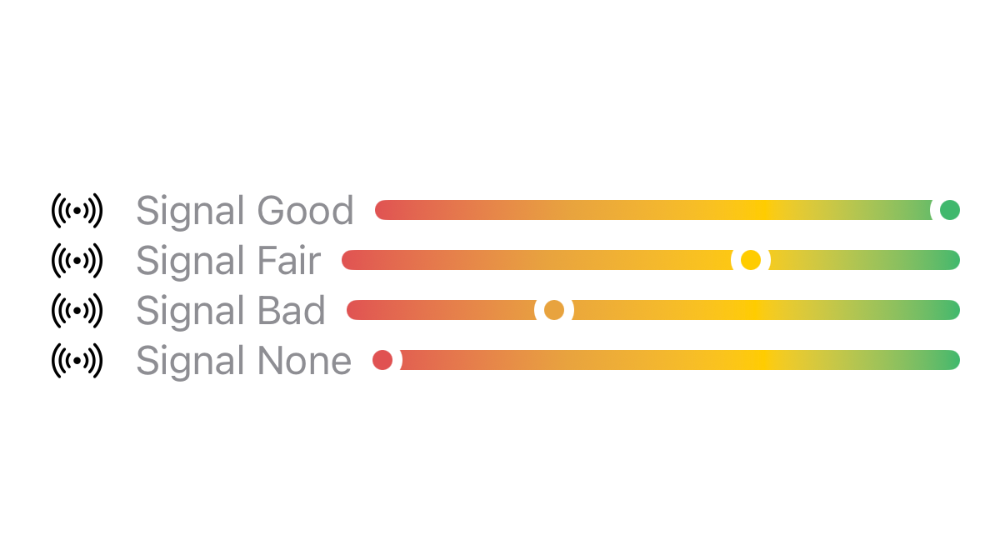

The Meshtastic signal meter—often seen as a series of bars or a status color in the app—is calculated very differently than the "bars" on a traditional cell phone or Wi-Fi router.
Most consumer devices just measure how "loud" a signal is. However, because Meshtastic uses LoRa (Long Range) technology, its signal meter uses logic that measures how clear the signal is, relative to the specific settings your mesh is using.
To understand the meter, you need to understand the two measurements the LoRa radio chip takes every time it receives a message:
If your friend shouts at you at a deafening rock concert, the signal is incredibly loud (High RSSI), but you still can't understand them because the background noise is louder (Bad SNR). Conversely, if your friend whispers to you in a dead-silent library, the signal is very weak (Low RSSI), but you can understand them perfectly (Great SNR).
For standard radios (like FM or Wi-Fi), if the background noise is louder than the signal (a negative SNR), the receiver just hears static.
LoRa is special. It uses "Spread Spectrum" modulation, which allows the radio to mathematically pull a signal out of the air even when it is buried deep underneath the background noise. This is why you will frequently see negative SNR numbers in Meshtastic (e.g., -10dB, which means the signal is 10 decibels weaker than the background static).
Depending on which Meshtastic preset you are using (e.g., LongFast vs. ShortFast), the radio has a specific SNR Limit—the absolute maximum amount of noise it can tolerate before the message is completely lost to the static.
The Meshtastic apps take both RSSI and SNR and run them through a specific formula to assign your signal a quality rating (None, Bad, Fair, or Good). It specifically scales these values based on the physical limits of the radio preset you are using.
Here is exactly how the app decides how many bars (or what color) to show you:
| Level | Bars | Criteria | Meaning |
|---|---|---|---|
| Good | 3 | RSSI better than -115 dBm AND SNR above the baseline limit for your preset |
Signal is both loud and clear — healthy connection. |
| Fair | 2 | Falls between Good and Bad | Signal getting quieter or noisier, but the radio understands the message fine. |
| Bad | 1 | RSSI drops to -120 dBm or worse, OR SNR within 5.5 dB of your preset's absolute breaking point |
Barely hanging on — at the edge of range or heavy interference. |
| None | 0 | RSSI worse than -126 dBm AND SNR has fallen 7.5 dB below the ideal limit |
Transmission completely buried in static. |
Because Meshtastic's meter acts as a "Clarity Meter", it behaves differently than what most people expect:
Tip — Don't panic over low RSSI: You might see a seemingly terrible RSSI value like
-118 dBm. On a cell phone, you would have zero bars. But if you have an SNR of+2 dB, Meshtastic will still show a strong signal! The library is quiet, so the whisper is heard perfectly.
-90 dBm) but your signal meter is only showing 1 Bar (Bad), you have a problem. It means you have local interference—perhaps a cheap power supply, a noisy computer, or a nearby radio tower—creating so much static that it is drowning out your mesh.